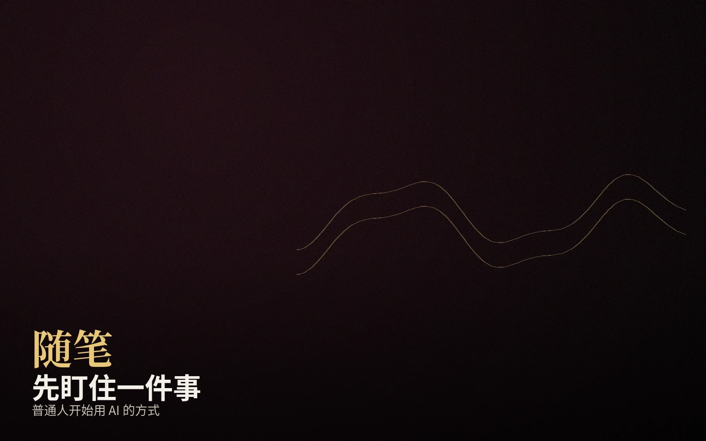

文章与教程
把做过的事写下来
这里放实操教程、复盘和随笔。有的来自已经发布的视频，有的是把日常在用的方法写成文字。

教程
2026年11月16日 · 8 分钟
同一个账号，网页能用，本地端为什么登不上
网页已经登录成功，本地客户端却进不去。先把环境和账号分开看。

教程
2026年11月15日 · 6 分钟
请了个 AI 老师，我是怎么设定他的
先决定它要扮演老师，再把验收方式写清楚。

健身
2026年11月6日 · 5 分钟
把外卖折算成运动量：我为什么要做热量债
开吃之前，先知道这顿要还多少。

随笔
2026年11月 · 6 分钟
非科班、不会写代码，我是怎么开始用 AI 做工具的
先从自己真正遇到的问题做起，而不是先去追完整的技术栈。

教程
2026年11月 · 5 分钟
把拍视频拆成一条能重复用的工作流
从一件真事出发，只拆开头、过程、判断和收尾。

随笔
2026年11月 · 4 分钟
普通人开始用 AI，其实只需先盯住一件事
选一件本周就会再次出现的事，让 AI 在这件事里被用熟。